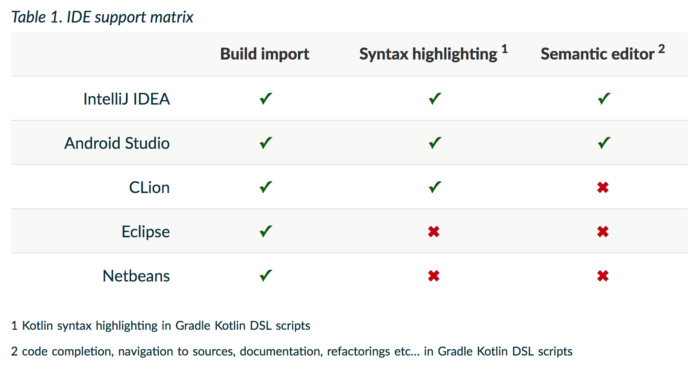
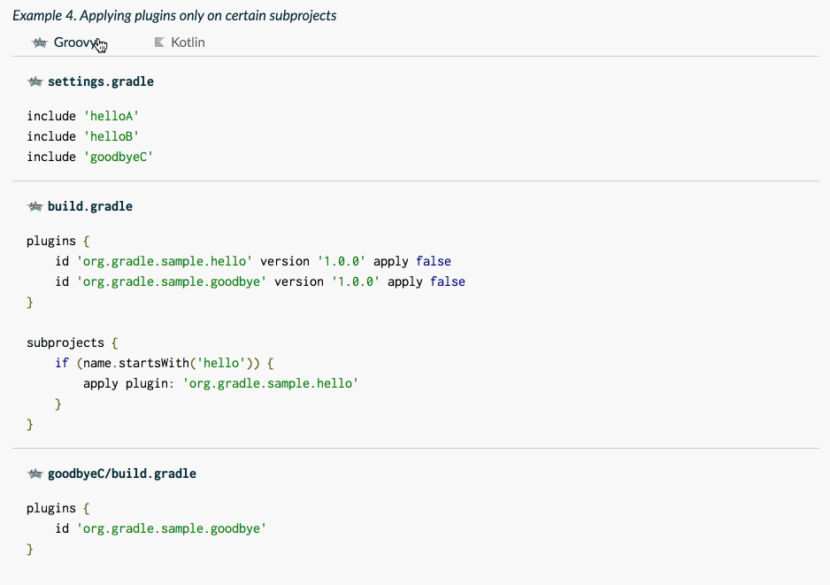
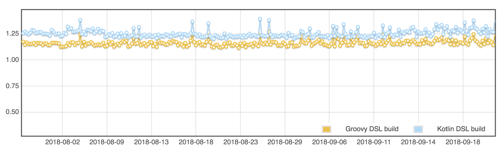

speaker {
name = "Paul Merlin"
company = "Gradle"
oss = "Apache Polygene PMC, former chair",
successes = listOf(
"BASIC 'Hello, World!' in 1986",
"C 'Hello, World!' in 1989",
"Java 'Hello, World!' in 1996"
"Kotlin 'Hello, World!' in 2015",
"tools", "daemons", "apps", "frameworks", "libs"
),
failures = generateSequence(code) { bugs },
twitter = "@eskat0s",
github = "eskatos"
}Type safe build logic with the Gradle Kotlin DSL
Introduction
by Hans - TBD
Who am I
Agenda
Gradle Build Tool in a nutshell
Type-safe build logic
What makes this possible?
Migrating from Groovy scripts
Taking a step back
Performance
Wrapping up
What is Gradle?
Gradle’s purpose
Gradle Build Tool is a build and automation tool
JVM based
Implemented in Java
100% Free Open Source - Apache Standard License 2.0
Agnostic Build System
JVM ecosystem
Java, Kotlin, Groovy, Scala, Clojure …
Native ecosystem
C, C++, Swift, …
Android
Misc
Go, Python, JavaScript, Asciidoctor, …
Gradle in figures
> 6M downloads / month
#17 OSS projects worldwide says TechCrunch
35+ Gradle Engineers
300K builds/week @ LinkedIn
Gradle Inc.
The company behind Gradle
Gradle Build Tool - gradle.org
Gradle Enterprise (Build Scans and Build Cache) - gradle.com
(Gradle consulting, support, development services etc.)
(Training: online, public and in-house)
Gradle is hiring!
Fully distributed development team
Exciting project used by millions
Build Tool team and Gradle Enterprise positions
If anything you hear from now on sounds like a great problem to solve,
Talk to us!
gradle.com/careers
Gradle Build Tool in a nutshell
Gradle Build Tool in a nutshell
Groovy and Kotlin build scripts
Task configuration and execution
Dependency resolution
Work avoidance

Gradle Plugins
Core Plugins (
java,jacoco,maven-publish…)Community Plugins (
kotlin,android,golang,pygradle,asciidoctor…)
Gradle Plugins
Gradle Plugins contribute
reusable and configurable Gradle Tasks
configurable Gradle Extensions
Gradle Plugins
Gradle Plugins contribute a model to configure
in build scripts
using a DSL
A Java library
plugins {
`java-library`
}
dependencies {
api("com.acme:foo:1.0")
implementation("com.zoo:monkey:1.1")
}
tasks.withType<JavaCompile> {
// ...
}A native app
plugins {
`cpp-application`
}
application {
baseName = "my-app"
}
toolChains {
// ...
}Type-safe build logic
Type-safe build logic
Kotlin, the language
A type safety galore
Great tooling and IDE support
The Gradle Kotlin DSL

Uniting a dynamic configuration model and a statically typed language
Type-safe build logic
Demonstration
github.com/eskatos/TODO
What did we just see?
A build whose logic is entirely written in Kotlin
Type safety, null safety
API and model discoverability
Documentation and navigation to sources
Refactorings
What makes all this possible?
The Gradle build model
Gradle Plugins contribute reusable and configurable models
This is a dynamic model
The Gradle Kotlin DSL provides a static view over that model
.kt vs .kts vs .gradle.kts
.ktfiles contain plain Kotlin codeassumed to be compiled by the kotlin compiler
.ktsfiles contain Kotlin codeassumed to be executed by the kotlin scripting support
.gradle.ktsfiles contain Kotlin codeassumed to be hosted by Gradle
.gradle.kts
Gradle Kotlin DSL in the classpath
Script compilation dependencies coming from Gradle
Implicit imports
Custom tailored IDE script editor support
IDE support

The Gradle Kotlin DSL sugar
Kotlin friendly extensions of the Gradle API
KClass<T>,reified<T>()Delegated properties for Gradle properties and collections
Dynamically generated Kotlin extensions
calculated right before evaluating the script body
for model elements contributed by plugins (configurations, extensions, tasks etc…)
Interoperability utilities
Migrating from Groovy
Migrating from Groovy
Demonstration
github.com/eskatos/android-sunflower
What benefits?
Type-safety
Discoverability
Documentation and navigation
Refactorings
Interoperability
Gradle Plugins may
expose untyped Groovy
Closuretaking functionsrely on more Groovy dynamism
e.g. Dokka required the use of
delegateClosureOf<T> {}existing fix will go in the next release
Interoperability
closureOf<T> {}anddelegateClosureOf<T> {}withGroovyBuilder {}apply(from = "some-groovy-script.gradle")Covered in detail in the Gradle user manual
Script Plugins
A script plugin is a
.gradle(.kts)scriptApplied from another one
apply(from = "some.gradle.kts")
Do not support the
plugins {}block, yetCovered in detail in the Gradle user manual
Precompiled script plugins
Same as script plugins
Compiled as part of a Kotlin source set
Can be used in
buildSrcCan be used in binary plugins
Covered in detail in the Gradle user manual
Migration strategies
Kotlin and Groovy build logic can coexist
mechanical step by step migration possible
migrating doesn’t block your team
Prepare your build to make it easier to migrate
by making your Groovy scripts closer to Kotlin
unify quotes, disambiguate properties/functions …
by applying Gradle fundamentals and best practices
use
buildSrcandplugins {}etc…
Let Kotlin logic drive Groovy logic
not the other way around
Resources for migration
Migration guide available at guides.gradle.org
Gradle user manual available at docs.gradle.org
both Groovy/Kotlin snippets
best place to learn how to do what with each DSL, and compare
Groovy and Kotlin samples

Taking a step back
Organize build logic
buildSrcGradle Plugins, Gradle Plugins, Gradle Plugins
plugins {},plugins {},plugins {}Basically, apply Gradle fundamentals and best practices
Profit
Gradle Kotlin DSL performance
Gradle Kotlin DSL performance
Gradle configuration phase
Configuring your build when nothing has changed takes more than a second?
Make sure to check out the Gradle Performance Guide
We can help you pinpoints bottlenecks at https://github.com/gradle/gradle/issues/1628
In comparison with the Gradle Groovy DSL
Gradle Kotlin DSL vs. Groovy DSL
when nothing has changed
Similar performance characteristics for most builds
~100ms gap on a large build with 500 sub projects
~2ms hit per project in that scenario, ymmv

Gradle Kotlin DSL vs. Groovy DSL
first use, or, change in buildSrc
Slower in certain scenarios
first use (checkout, pulling changes, switching branches)
changes in the build logic, the worse being changing
buildSrc
We are talking about ~3.5 times slower at the moment
~1min gap on a large build with 500 sub projects
~120ms per project in that scenario, ymmv
Script compilation is the main bottleneck
Gradle Build Cache
Script compilation can be cached in a Gradle Build Cache
org.gradle.caching=trueor--build-cacheIn general, build cache helps with your overall build performance
Local and remote
Gradle provides a Docker image for a build cache node
Pair it with Gradle Enterprise to get
replication, monitoring, node management etc…
Performance opportunities
Compilation avoidance
Parallel script compilation
Faster Kotlin compilation
Targeted optimization
General performance advice
Configuring your build when nothing has changed takes
more than a second?
Make sure to check out the
Gradle Performance Guide
We can help you pinpoints bottlenecks at
https://github.com/gradle/gradle/issues/1628
Wrapping up
Ready for general use
Gradle 5.0 is when the Gradle Kotlin DSL is ready for general use!
Please give it a try with Gradle 5.0-M1!
gradle.org/release-candidate
Gradle Kotlin DSL Team
Chris Beams @cbeams
Rodrigo B. de Oliveira @rodrigobamboo
myself
contributors from other teams at Gradle
even from some Groovy commiters ツ
Gradle Kotlin DSL Community
We wouldn’t be here without the community!
Very friendly and active Kotlin community
Bug reports, of course
But also pull-requests, code reviews, documentation, support to others
Thank you!
Join us at gradle.org/slack
Questions
- Gradle 5.0-M1
- Slides
- Documentation
- Issue tracker
- Slack
- We’re hiring!